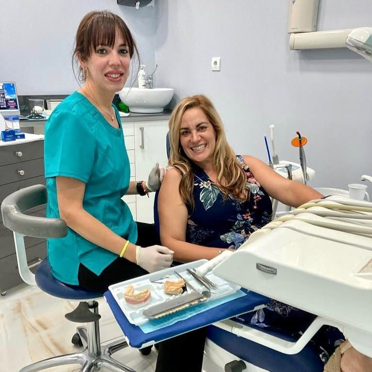
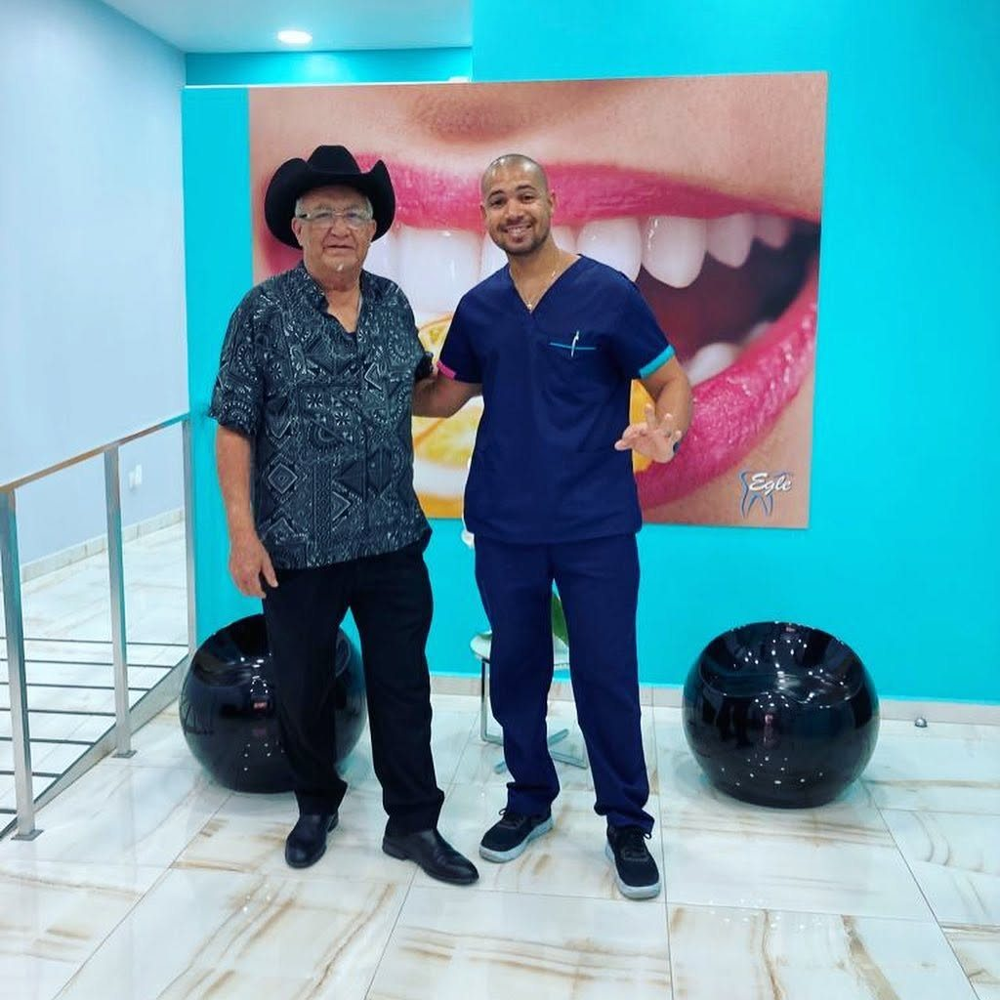

01 Clínica Dental Egle
La revisión y el presupuesto no te cuestan nada
Dos clínicas, una en Leganés y otra en pleno centro de Madrid. Llama, te vemos, y te decimos qué necesitas antes de que decidas nada.
Lunes a viernes, de 10:00 a 14:30 y de 16:00 a 20:00.
02 Por dónde empezar
No hace falta que sepas cómo se llama
Nadie llega a una clínica pidiendo una profilaxis. Se llega porque algo duele, porque algo no gusta al mirarse, o porque toca revisión.
Me duele
Urgencias. Llámanos dentro del horario de atención y te atendemos en la clínica a la mayor brevedad.
Ir a urgencias → 02No me gusta cómo se ve
Estética, blanqueamiento con Philips Zoom, ortodoncia y prótesis. La primera consulta no cuesta nada.
Ver tratamientos → 03Vengo a revisión
Odontología general y limpieza. Cada seis meses, aunque no duela nada: es cuando sale más barato.
Cómo funciona →03 Los once tratamientos
Desde la profilaxis hasta la prótesis
Desliza la tira para verlos todos.
- 01
Odontología general
La caries, a tiempo, antes de que llegue a destruir la pieza
- 02
Implantes
Raíces de titanio puro que sostienen el diente nuevo sin tallar los sanos de al lado
- 03
Endodoncia
Rotatoria, con tiempos de tratamiento más cortos para el paciente
- 04
Ortodoncia
Alineación y mordida, fija o removible, en niños y en adultos
- 05
Odontopediatría
Desde que salen los primeros dientes, entre los seis meses y el año
- 06
Estética dental
Espacios, color, tamaño y forma, para devolverle armonía a la sonrisa
- 07
Rehabilitación oral
Tres tipos de prótesis según los huecos, el remanente y lo que esperas
- 08
Blanqueamiento
Sistema Philips Zoom de uso clínico: varios tonos menos en una sesión
- 09
Periodoncia
Para que los dientes aguanten, las encías tienen que estar sanas
- 10
Profilaxis
La limpieza, lo más eficaz que existe para no tener que hacer nada más
- 11
Urgencias
Si duele hoy, se mira hoy, dentro del horario de atención
04 Por dentro
Las dos, por dentro



05 La revisión
Venir cuando no duele sale más barato
Si tus dientes están en condiciones normales y los cuidas de forma responsable, con un control preventivo cada seis meses basta. Si el cuadro es más complicado, mejor que lo veamos antes.
La revisión y el presupuesto no tienen coste, así que saber en qué situación estás no te compromete a nada. De cada consulta sales sabiendo qué hay, qué cuesta y cuánto puede esperar.
06 Urgencias
Si duele hoy, se mira hoy
Llámanos dentro del horario de atención telefónica y te atendemos en la clínica a la mayor brevedad posible. No hace falta que seas paciente nuestro.
07 Dónde estamos
Una en Leganés y otra en Sol
Madrid centro
Calle Núñez de Arce 1028012 Madrid Metro Sol
A dos calles de la Plaza de Santa Ana, por si vienes de fuera a hacerte el tratamiento.
Llamar916 03 51 23Lunes a viernes, de 10:00 a 14:30 y de 16:00 a 20:00. La revisión y el presupuesto no tienen coste.